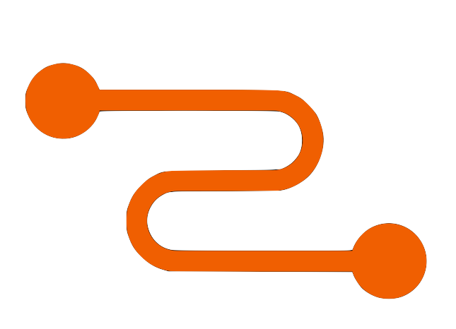

Practical GraphQL For RelayUnderstanding the SpecSibelius Seraphini


Overview
Core assumptions
Object Identification
Object Identification
Object Identification
Node Interface
Connections
What is a Cursor?
A cursor is a pointer to a "list"/"connection", it tells you where you are in a list of items
Forward Pagination
first: 10, after: "mycurrentcursor"
This tell GraphQL to return 10 items after "mycurrentcursor" cursor
Backward Pagination
last: 10, before: "anothercursor"
This tell GraphQL to return 10 items before "anotercursor" cursor
Mutations
- It should return all necessary data to update your GraphQL client
Mutations that add a new Node/Edge to the Graph
- It should return the new created edge to be add to existing connections
Mutation Add Edge
Mutations that edit an existing Node
- It should return the edited node
Mutation Edit Node
Mutation that remove a Node
- It should return the id of removed node
Mutation Remove Node
Pratical GraphQL Tips
This is based on our experience working with GraphQL since their public release at 2015
Avoid Viewer
- Viewer was a "hacky" solution for Relay Classic where you couldn't do query on QueryType
- We recommend use fields directly on QueryType instead, so we can avoid confusion
Keep Logged User on GraphQL Context
- As soon as you know who is logged user, add it to your GraphQL context so you can easily access them in any resolver
- This is also useful to implement viewer can see (security) solutions on resolver based level
Add a me field resolver
- me field on QueryType that resolves to a UserType of the logged user
- This makes it easy to find out who is logged in your app
Each Node should have a load function
- Each type should have an unique way to be resolved
- This will make sure that every resolver is always resolving the correct data
- This also make sure it is easy to add dataloader later on
- UserLoader.load(context, id)
Create a Dataloader generator per database/resource
- Check GraphQL Mongoose Loader
- This make sure all data is resolved in the same way with all optimizations
Create one Connection per database/resource cursor
- Check GraphQL Mongoose Connection
- This make sure all your connections handle cursor and pagination properly
Follow Relay Mutation Input/Output Object pattern
- Check graphql-relay
- With an Input Object type in your mutation it is easy to add more fields without breaking old clients
- The same goes to Output Object type